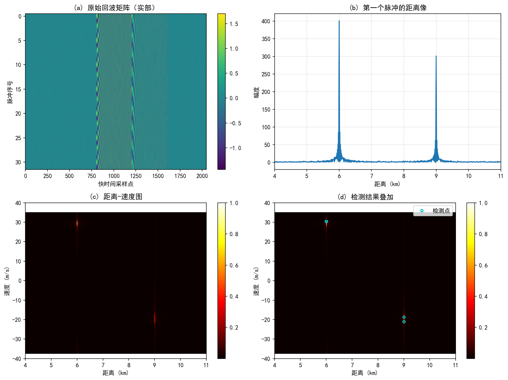
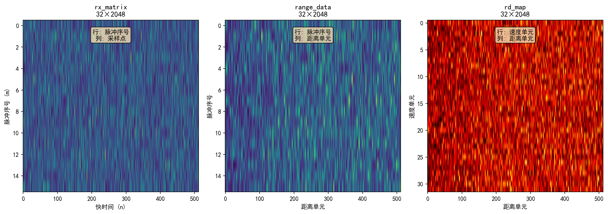
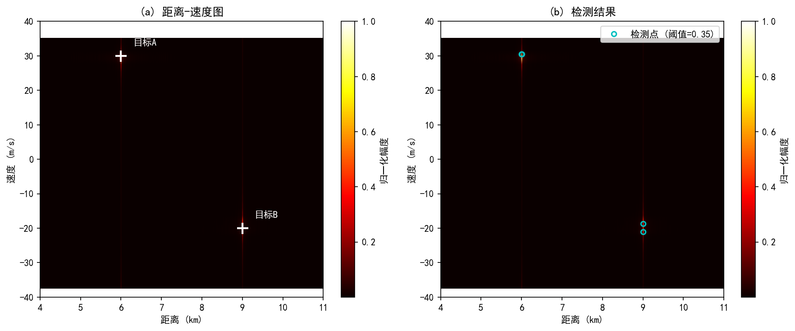
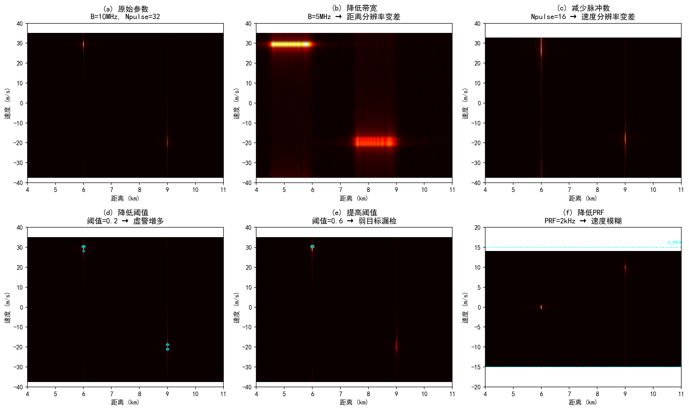

Chapter 8 Complete MATLAB Processing Pipeline
Chapter 8 Complete MATLAB Processing Pipeline
Previous chapters have broken down the radar processing chain: Chapter 3 arranged the I/Q samples from multiple transmitted pulses into rx_matrix, Chapter 4 performed range processing in fast time, Chapter 5 performed Doppler processing in slow time, Chapter 6 filtered responses in the range-velocity map into detection results, and Chapter 7 explained how direction information enters target parameters.
This chapter integrates these steps into a single MATLAB program. Each variable in the program must answer three questions: what are its dimensions, which dimension will be processed next, and which physical quantity does it correspond to after processing.
This chapter adopts a simplified pulse-Doppler scenario: two point targets, 32 transmitted pulses, baseband LFM signal. The complete script is provided in the accompanying MATLAB files; the main text retains only key fragments and verification methods.
8.1 Simulation Parameters
This chapter uses two point targets as examples. The radar parameters continue the simplified settings from previous chapters: using baseband LFM pulses, the receiver obtains complex I/Q samples, and multiple transmitted pulses are organized by transmission order into rx_matrix。
| Parameter | MATLAB Variable | Value | Meaning |
|---|---|---|---|
| Speed of light | c | $3\times10^8\,m/s$ | Range-delay conversion |
| Carrier frequency | fc | $10\,GHz$ | Determines wavelength |
| Wavelength | lambda | $0.03\,m$ | Doppler-to-velocity conversion |
| LFM bandwidth | B | $10\,MHz$ | Affects range resolution |
| Pulse width | Tp | $20\,\mu s$ | Transmit pulse duration |
| Sampling rate | fs | $20\,MHz$ | Fast-time sampling interval |
| PRF | PRF | $5\,kHz$ | Slow-time sampling rate |
| Number of pulses | Npulse | $32$ | Determines CPI and velocity resolution |
| Fast-time sample count | Nfast | $2048$ | Determines the receive window length |
The ground truth for the two targets is set as follows:
| Target | Range | Radial velocity | Amplitude |
|---|---|---|---|
| A | $6\,km$ | $+30\,m/s$ | $1.0$ |
| B | $9\,km$ | $-20\,m/s$ | $0.75$ |
The velocities here all fall within the unambiguous velocity range of this example. Because
Therefore, both $+30\,m/s$ and $-20\,m/s$ can be displayed on the two-sided velocity axis. If the PRF is reduced to $2\,kHz$, $v_{\max}$ would become $15\,m/s$, and target A would experience velocity ambiguity.
There are two levels to the target representation here.scene The range and velocity in the table above are ground truth values, used to generate simulated echoes;target_list are the results estimated by the processing chain from the echoes. Real radar only has the latter, not the former.
8.2 From Echo Matrix to Target List
The processing chain written as a single-line data flow:
scene -> tx -> rx_matrix -> range_data -> rd_map -> det_mask -> target_listThe role and dimensions of each variable are as follows:
| Variable | Typical Dimensions | Axis Meaning | Physical Meaning |
|---|---|---|---|
scene | Struct | N/A | Target Ground Truth and Radar Parameters |
tx | 1 x Nt | Fast time | Transmitted baseband LFM pulse |
rx_matrix | Npulse x Nfast | Row: pulse index; Column: fast-time samples | Raw complex echo matrix |
range_data | Npulse x Nfast | Row: pulse index; Column: range-correlated samples | Range compression result |
rd_map | Ndoppler x Nrange | Row: Doppler/velocity bin; Column: range bin | Range-Doppler Map |
det_mask | and rd_map same | rows, columns, and rd_map alignment | detection mask |
target_list | Ntarget × number of fields | one target per row | estimation results including range, velocity, response magnitude, etc. |
The top-level program is organized as follows:
scene = ch08_default_scene();
[tx, mf, k] = ch08_make_lfm_pulse(scene.B, scene.Tp, scene.fs);
rx_matrix = ch08_simulate_echo(scene, k);
[range_data, range_axis] = ch08_range_compress(rx_matrix, mf, scene.c, scene.fs);
[rd_map, rd_power, vel_axis] = ch08_doppler_process(range_data, scene);
[det_mask, row_idx, col_idx] = ch08_detect_targets(rd_power, 0.35);
target_list = ch08_make_target_list(row_idx, col_idx, rd_power, range_axis, vel_axis);This code only examines function interfaces, not their internals. The first output rx_matrix is still just the received sample matrix; the final target_list is the reportable target results. Each intermediate step transforms the data organization.
Let's verify the dimensions:
size(rx_matrix)
size(range_data)
size(rd_map)
size(det_mask)
height(target_list)If rx_matrix and range_data have their row and column directions reversed, the subsequent Doppler FFT, velocity axis, and detection points will all be incorrect.
Figure 8.1 shows the four stages of the complete processing chain. Starting from the raw echo matrix, range compression yields single-pulse range profiles, then Doppler processing produces the range-velocity map, and finally threshold detection filters out targets.

8.3 Echo Matrix Formation
How scene parameters enter the echo
scene Each target has at least three parameters: range $R_i$, radial velocity $v_i$, and amplitude $A_i$. Range determines how late the echo arrives; velocity determines how much phase advances between adjacent pulses.
The relationship from range to time delay is still the formula from Chapter 4:
The relationship from velocity to Doppler frequency is still the formula from Chapter 5:
In the pulse_idx transmitted pulse, the slow-time phase of target $i$ is written as
where $T_r=1/\text{PRF}$. In the program, simply put these two relationships into the echo generation function:
tau = 2 * R / scene.c;
fd = 2 * v / scene.lambda;
delayed_t = fast_time - tau;
valid = delayed_t >= 0 & delayed_t < scene.Tp;
echo(valid) = amp * exp(1j * pi * k * delayed_t(valid).^2) ...
.* exp(1j * 2*pi * fd * (pulse_idx - 1) * scene.Tr);The first half exp(1j*pi*k*delayed_t.^2) is the delayed baseband LFM echo; the second half is the inter-pulse phase variation caused by target motion. Chapter 4 addressed how the first half forms range peaks; Chapter 5 addressed how the second half forms velocity peaks.
rx_matrix Rows and columns of
The echo generation function ultimately outputs rx_matrix. This chapter's program adopts the following convention:
rx_matrix: Npulse x NfastThat is, each row contains the fast-time samples of one transmitted pulse, and each column contains the slow-time sequence at the same fast-time index across different pulses.
| Direction | Index | Corresponding Physical Quantity | Subsequent Processing |
|---|---|---|---|
| Row direction | pulse_idx | Slow time / Pulse index | Doppler FFT is performed along this direction |
| Column direction | fast_idx | Fast-time samples | Range compression is performed along this direction |
This convention aligns with Chapter 3's rx_matrix remains consistent. If the program uses the opposite convention it will still work, but every fft(..., dim)、conv loop and imagesc coordinate must be changed accordingly. This textbook does not mix the two conventions.
Figure 8.3 shows the dimensional transformations of data in the processing chain (only partial samples are shown in the figure for illustration).rx_matrix and range_data has the same dimensions, but the physical meaning of columns has changed from "sample points" to "range bins".rd_map The row direction changes from "pulse index" to "velocity bins".

8.4 Range Compression Yields range_data
Matched filtering along fast time
rx_matrix Each row is the echo from one transmitted pulse. Range compression performs matched filtering within this row, compressing the delayed LFM echo into range peaks.
In Chapter 4, matched filtering was written as
The main code fragment is:
range_data = zeros(size(rx_matrix));
for pulse_idx = 1:size(rx_matrix, 1)
range_data(pulse_idx, :) = conv(rx_matrix(pulse_idx, :), mf, 'same');
endHere, pulse_idx fixes one transmitted pulse,: extracts all fast-time samples within that pulse.conv(..., 'same') keeps the output length equal to the input length, so range_data the dimensions remain Npulse x Nfast。
The most easily confused aspect before and after processing is the meaning of the column direction.rx_matrix The columns are simply fast-time sample points;range_data columns can now be aligned with the range axis. This is still not the final goal, just the range compression result for each transmitted pulse.
Range Axis and Group Delay Correction
The matched filter has a length. When using conv(..., 'same') , the output retains the center segment, and the range axis must subtract the center offset of the matched filter:
group_delay = floor(length(mf) / 2);
Nfast = size(rx_matrix, 2);
range_axis = ((0:Nfast-1) - group_delay) * scene.c / (2 * scene.fs);This range axis comes from the ranging formula in Chapter 4: sample points are first converted to time, then from time to range.
where $n_0$ is group_delay. If this offset is not subtracted, the range estimate will be systematically overestimated.
8.5 Doppler Processing to Obtain rd_map
FFT Along Slow Time
After range compression is complete,range_data each column represents the slow-time sequence of the same range cell across different pulses. As explained in Chapter 5, the spectrum of this sequence is the Doppler spectrum.
In the code, this is written as:
rd_map = fftshift(fft(range_data, [], 1), 1);
rd_power = abs(rd_map);
rd_power = rd_power / max(rd_power(:));Here fft(..., [], 1) the last parameter of 1 indicates processing along the first dimension. Because this book adopts the convention range_data rows are pulse indices, so the Doppler FFT is performed along dimension 1.
After this step, the meaning of the row dimension changes: previously it represented pulse number, now it represents Doppler bin or velocity bin. The column dimension still corresponds to range.
| Variable | Row direction | Column direction |
|---|---|---|
range_data | Pulse index | Range samples |
rd_map | Doppler / velocity bin | range bin |
This step is easy to get wrong.rd_map It still appears to be a 2D matrix, but it is no longer a pulse–fast-time table.
The velocity axis and fftshift
For a two-sided complex I/Q sequence, the Doppler frequency range is written as
Therefore the velocity axis is written as:
Npulse = scene.Npulse;
doppler_freq = (-Npulse/2:Npulse/2-1) * scene.PRF / Npulse;
vel_axis = doppler_freq * scene.lambda / 2;fftshift Shift zero Doppler to the center. Without fftshift the velocity axis will still be labeled in two-sided form, causing velocity positions in the plot to be misaligned.
In this example, the velocity resolution is
Substituting $\lambda=0.03\,m$, $\text{PRF}=5000\,Hz$, $N=32$, we obtain
So the target velocity may not fall exactly on a particular velocity bin; the actual peak will appear near the closest bin.
Figure 8.2 shows the range-velocity map in detail. The left image marks the true positions of two targets, while the right image overlays the detection results. Multiple detection points may appear near some targets due to the combined effects of mainlobe broadening and fixed thresholding.

8.6 From rd_map to det_mask
Get Fixed Threshold Working First
Bright spots on the range-velocity map are not yet a target list. As explained in Chapter 6, responses on the map may come from targets, noise, sidelobes, or clutter. Detection converts the continuous amplitude map into a 0/1 mask.
The minimal implementation starts with a fixed threshold:
threshold = 0.35;
det_mask = rd_power > threshold;
[row_idx, col_idx] = find(det_mask);det_mask and rd_map Uses the same row-column coordinates.det_mask(row, col)=1 indicates rd_map(row, col) this range-velocity cell passes detection.
Fixed thresholding is suitable for getting the processing chain working initially. Its limitations are obvious: when the background is non-uniform, sidelobes are high, or the dynamic range between strong and weak targets is large, a single global threshold struggles to work well across the entire map. The CFAR covered in Chapter 6 can replace this detection module, but Chapter 8 does not expand on 2D CFAR code.
Common Misconception about Detection Masks
det_mask The 1s in the mask do not necessarily correspond one-to-one with targets. Multiple adjacent cells near a target's mainlobe may exceed the threshold, and sidelobes from strong targets may also trigger detection. Before outputting the actual target list, local peak preservation or plot clustering is typically performed.
A simplified local peak preservation:
is_peak = imregionalmax(rd_power);
det_mask = (rd_power > threshold) & is_peak;
[row_idx, col_idx] = find(det_mask);This code requires the Image Processing Toolbox. Without this toolbox, you can use the plot clustering approach from Chapter 6: first find regions that pass the threshold, then take the cell with the maximum response within each region as the representative point.
8.7 From Detection Mask to Target List
Converting Indices to Physical Quantities
find(det_mask) The returned values are row and column indices, not yet range and velocity. The conversion relationship is written as:
range_est = range_axis(col_idx);
vel_est = vel_axis(row_idx);where range_axis corresponds to the range axis,vel_axis corresponds to the velocity axis. These two axes were already generated in the previous range compression and Doppler processing.
At this step, the range-velocity map obtained earlier is finally converted into reportable target results.
Target Table Organization
The simplest target table retains only range, velocity, and response amplitude:
target_list = table(range_est, vel_est, rd_power(sub2ind(size(rd_power), row_idx, col_idx)), ...
'VariableNames', {'Range', 'Velocity', 'Power'});In practical engineering, the target table also includes fields such as detection time, SNR estimate, angle information, etc. The angle measurement covered in Chapter 7 can be incorporated into the target table here.
8.8 Parameter Variation Exercises
Exercise 1: Change the target range. Change target A's range from $6\,km$ to $7\,km$ and observe range_data the range peak in rd_map and the horizontal position of the bright spot in the figure. The velocity position should not change noticeably.
Exercise 2: Change the target velocity. Change target B's velocity from $-20\,m/s$ to $+20\,m/s$ and observe rd_map the bright spot moving from the negative velocity side to the positive velocity side in the figure. The range position should not change noticeably.
Exercise 3: Reduce the pulse count. Change Npulse Change from 32 to 16. The velocity bins become coarser,rd_map and velocity resolution degrades. This change corresponds to the CPI-velocity resolution relationship in Chapter 5.
Exercise 4: Reduce PRF. Change PRF from $5\,kHz$ to $2\,kHz$. The maximum unambiguous velocity becomes $15\,m/s$; target A's $+30\,m/s$ will fold to near $0\,m/s$, and target B's $-20\,m/s$ will fold to near $+10\,m/s$. Observe vel_axis the range and peak position changes.
Exercise 5: Adjust threshold. Change threshold from 0.35 to 0.2 and 0.6. Lowering the threshold increases detections; raising it causes weak targets to disappear more easily. This exercise corresponds to the false alarm and missed detection trade-off in Chapter 6.
Exercise 6: Add strong zero-velocity clutter. At some range, add an echo with velocity $0\,m/s$ and large amplitude. A strong response will appear near zero velocity on the range-velocity map, and the detector may report it first. This exercise connects zero-Doppler clutter from Chapter 5 with detection limitations from Chapter 6.
Figure 8.4 shows the impact of different parameter settings on processing results. The left column shows the original settings; the right column shows the effects after changing bandwidth, pulse count, and PRF respectively.

After running these exercises, targets are no longer just bright spots on a plot. They start from scene as ground truth, pass through rx_matrix、range_data、rd_map and det_mask, and finally become target_list a single row. Being able to explain this path connects the MATLAB processing pipeline with the formulas from previous chapters.